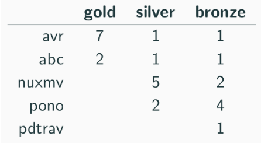

Welcome
I am a Ph.D. student candidate in the CSE department at the University of Michigan, Ann Arbor. I am working with my adviser Prof. Karem Sakallah on automatic formal verification of complex systems.
I am the developer of AVR, a push-button verification engine for scalable verification of state transition systems, for applications in hardware, software and distributed systems verification.
I have worked on a verification engine called I4 that uses AVR to scalably verify properties on distributed systems.
I am currently working on a verification engine called IC3PO: IC3 for Proving Protocol Properties. IC3PO performs fully-automatic formal verification of distributed protocols by inferring quantified inductive invariants.
News
- [Feb 24, 2021]
My paper titled "On Symmetry and Quantification: A New Approach to Verify Distributed Protocols" is accepted for publication in the NASA Formal Methods Symposium NFM'21 [preprint]
- [January 20, 2020]
My tools AVR and I4 got an article in Code Blue, the new annual publication from CSE at the University of Michigan which highlights high-impact work being done in and beyond the division’s many labs.
- [October 30, 2020]
Here is a news article summarizing the success of my tool AVR at the Hardware Model Checking Competition 2020 (HWMCC'20)
- [October 01, 2020]
My tool AVR won the 1st place in the prestigious Hardware Model Checking Competition 2020 (HWMCC'20) [tweets] [slides]

- [September 30, 2020]
I will be a member of the artifact evaluation committee (AEC) of VMCAI 2021 (22nd International Conference on Verification, Model Checking, and Abstract Interpretation).
- [July 30, 2020]
I will be a member of the artifact evaluation committee (AEC) of OOPSLA 2020.
- [April 30, 2020]
I will be working with the CSL team at SRI to develop quantified SMT solving techniques in the Yices 2 SMT solver.
- [March 30, 2020]
Thanks to the Rackham Graduate School for awarding me the Rackham Predoctoral Fellowship 2020 for outstanding PhD research. The Rackham Predoctoral Fellowship supports outstanding doctoral candidates working on dissertations that are unusually creative, ambitious and impactful.
- [December 23, 2019]
My paper titled "AVR: Abstractly Verifying Reachability" is accepted for the International Conference on Tools and Algorithms for the Construction and Analysis of Systems TACAS'20 [paper]
- [November 6, 2019]
I was the runner-up finalist of the CSE Graduate Student Honors Competition 2019 for outstanding PhD research, titled "Push-button Verification using Abstraction and Induction"
- [October 24, 2019]
AVR won the 1st place in the BV track and the 2nd place in the ABV track of the prestigious Hardware Model Checking Competition (HWMCC) 2019
- [October 9, 2019]
I will be a member of the artifact evaluation committee (AEC) of CAV 2020 (32nd International Conference on Computer Aided Verification)
- [July 22, 2019]
My co-authored a paper titled "I4: Incremental Inference of Inductive Invariants for Verification of Distributed Protocols" published in the 27th ACM Symposium on Operating Systems Principles SOSP'19 [paper]
- [March 28, 2019]
My co-authored paper titled "Towards Automatic Inference of Inductive Invariants" was published in the Workshop on Hot Topics in Operating Systems HotOS'19 [paper]
- [Feb 22, 2019]
My paper titled "Model Checking of Verilog RTL using IC3 with Syntax-guided Abstraction" is accepted for NASA Formal Methods Symposium NFM'19 [paper] [preprint]
- [Jan 27, 2019]
I will be presenting my paper titled "Empirical Evaluation of IC3-Based Model Checking Techniques on Verilog RTL Designs" at Design Automation and Test in Europe DATE'19 More details can be found here [paper]